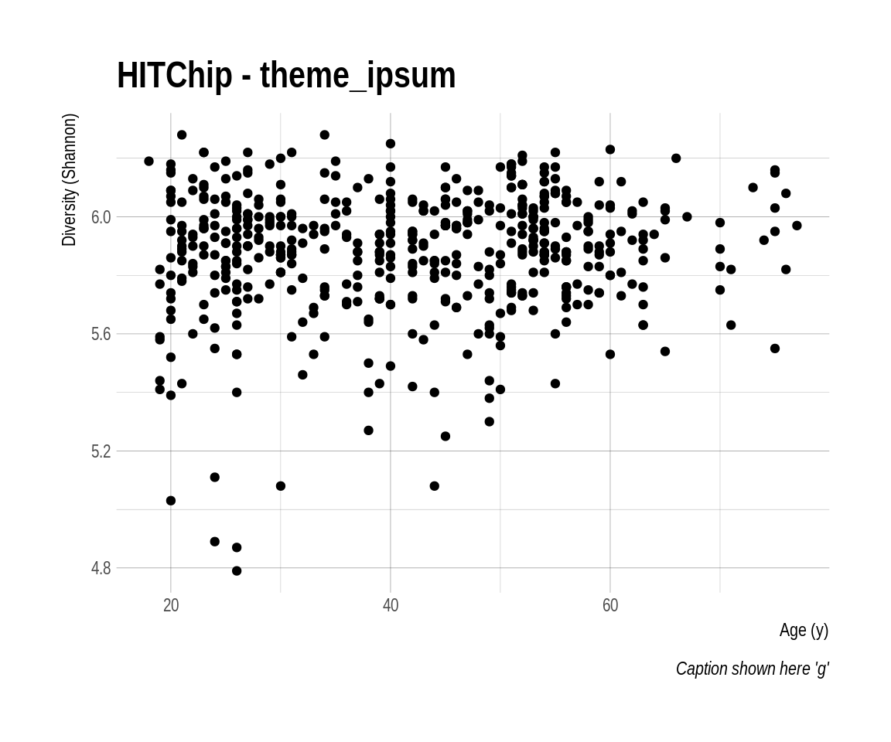
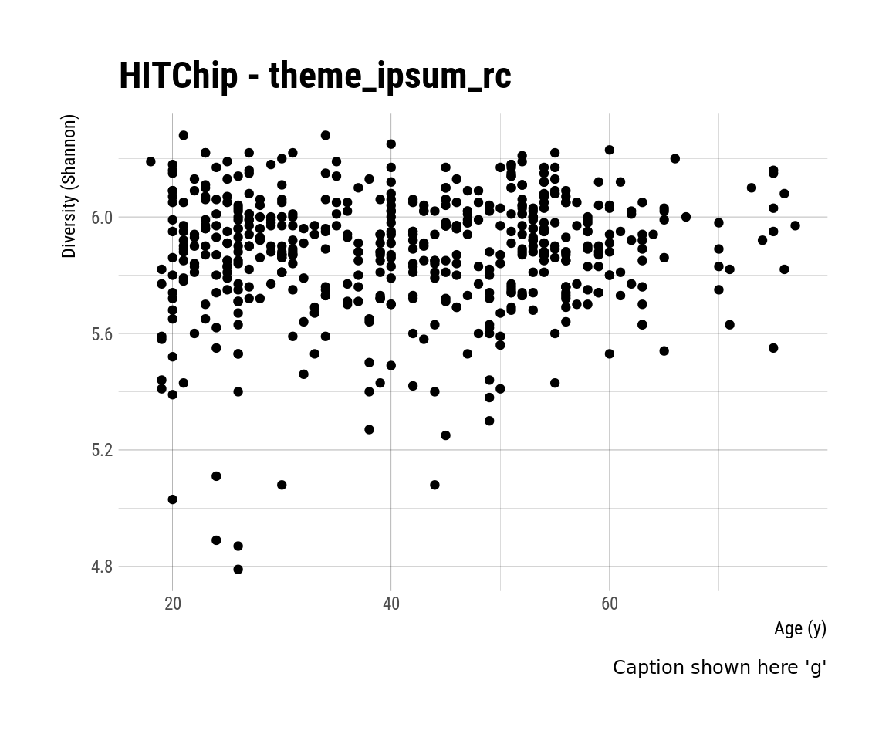
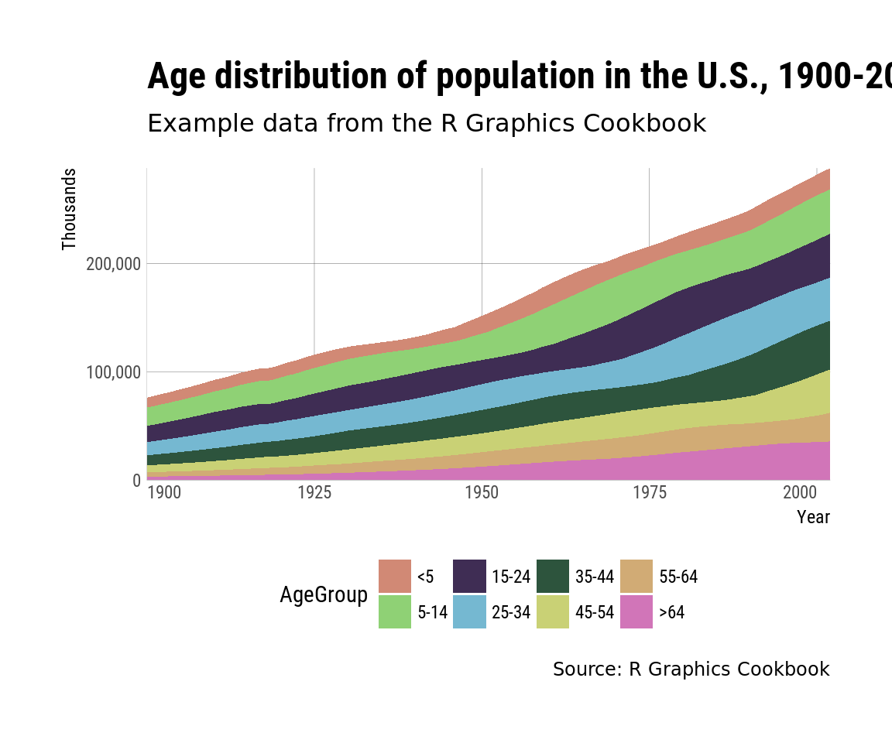
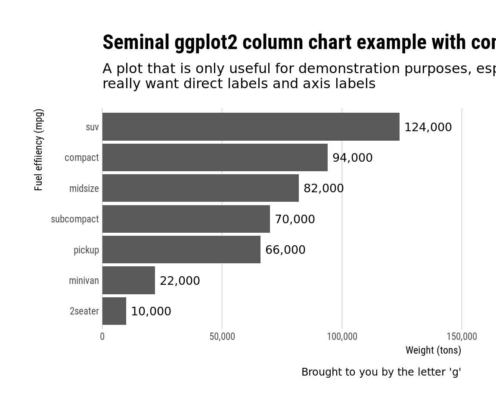

Load example data:
# Load data
library(microbiome)
data(atlas1006)
# Rename the data
pseq <- subset_samples(atlas1006, DNA_extraction_method == "r")library(hrbrthemes)
library(gcookbook)
library(tidyverse)
# Themes from https://github.com/hrbrmstr/hrbrthemse
p <- ggplot(meta(pseq), aes(age, diversity)) +
geom_point() +
labs(x="Age (y)", y="Diversity (Shannon)",
title="HITChip Atlas",
subtitle="Age-diversity relation",
caption="Caption shown here 'g'")
print(p + theme_ipsum() + ggtitle("HITChip - theme_ipsum"))
print(p + theme_ipsum_rc() + ggtitle("HITChip - theme_ipsum_rc"))
# Theme from https://github.com/hrbrmstr/hrbrthemse
p <- ggplot(uspopage, aes(x=Year, y=Thousands, fill=AgeGroup)) +
geom_area() +
scale_fill_ipsum() +
scale_x_continuous(expand=c(0,0)) +
scale_y_comma() +
labs(title="Age distribution of population in the U.S., 1900-2002",
subtitle="Example data from the R Graphics Cookbook",
caption="Source: R Graphics Cookbook") +
theme_ipsum_rc(grid="XY") +
theme(axis.text.x=element_text(hjust=c(0, 0.5, 0.5, 0.5, 1))) +
theme(legend.position="bottom")
print(p) 
update_geom_font_defaults(font_rc_light)
df <- count(mpg, class) %>%
mutate(n=n*2000) %>%
arrange(n) %>%
mutate(class=factor(class, levels=class))
p <- ggplot(df, aes(class, n)) +
geom_col() +
geom_text(aes(label=scales::comma(n)), hjust=0, nudge_y=2000) +
scale_y_comma(limits=c(0,150000)) +
coord_flip() +
labs(x="Fuel effiiency (mpg)", y="Weight (tons)",
title="Seminal ggplot2 column chart example with commas",
subtitle="A plot that is only useful for demonstration purposes, esp since you'd never\nreally want direct labels and axis labels",
caption="Brought to you by the letter 'g'") +
theme_ipsum_rc(grid="X")
print(p)